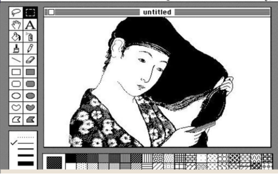
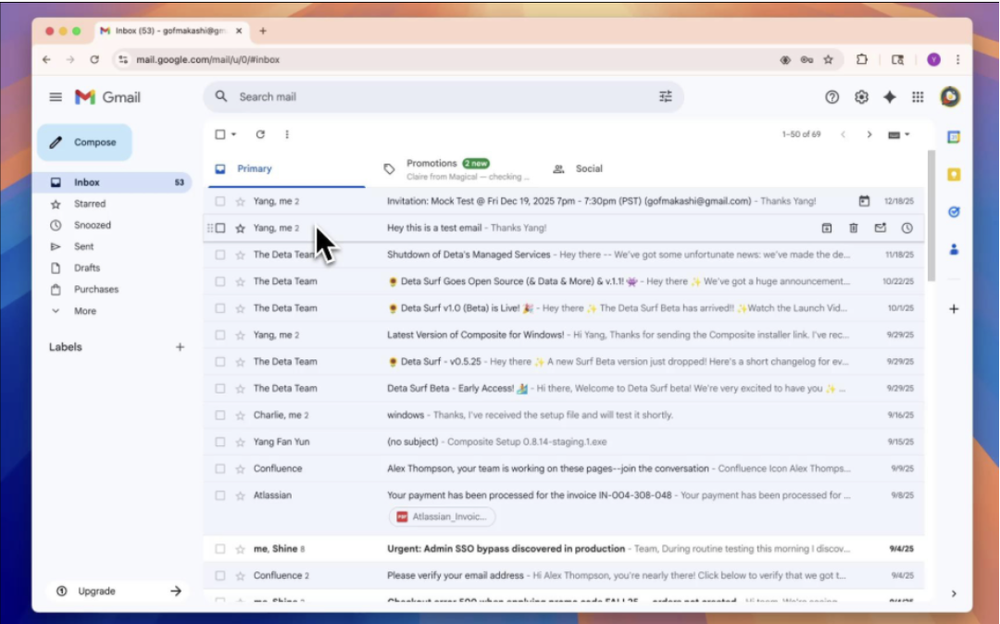
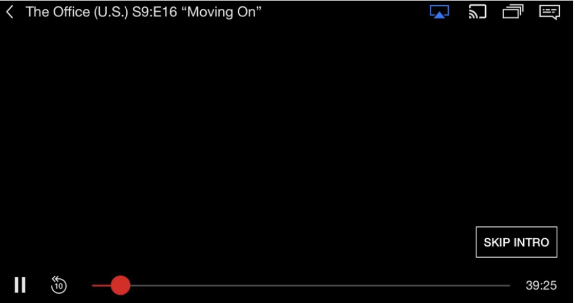

My Inspiration- Elina
Bill Atkinson

Bill Atkinson
Bill was one of the early Apple employees, he developed MacPaint, which was the graphics system that powered the Macintosh interface. He transformed the way that people interact with computers - from controlling machines through typing commands - to a visual system. He inspires me because his original ideas are a natural and foundational part of how we interact with digital interfaces. Such as the action 'double click', 'drop down menus' and navigaton bar.
Image: MacPaint interface — Bill Atkinson, 1984.
Matias Duarte

Matias Duarte
Matias Duarte is the product and UX designer at Google who led the creation of Material Design, which is Google's design system. It has established rules for spacing, motion, buttons, layers and navigation so that it feels natural and understandable. It is inspiring to me because as someone who has built design systems, I constantly pull from Material Design and his design system, so it is incredibly inspiring that an individual 'created' this from thin air.
Image: Gmail Interface — Matias Duarte, 2014.
Cameron Johnson

Cameron Johnson
Cameron Johnson was Director of Product Innovation at Netflix and helped develop the 'Skip Intro' feature. This came from user testing and prototyping. This is inspiring to me because it is so simple, yet feels desperately required. It removes so much repeated frustration - and I believe that it is a case study of a single feature that solved a single problem extremely successfully. I find it inspiring because it is a great example of user -centered design, and the impact of something so simple.
Image: Netflix Interface — Cameron Johnson, 2014.
I noticed that all three of my inspirations are from the tech industry, and I think that is because I am drawn to the way that technology can be used to solve problems and improve people's lives. I also noticed that they all have a strong focus on user experience and design, which is something that I am very interested in.
I had some trouble figuring out how to at the images, and I had some trouble with the formatting as well. This was very fun as I am relearning this information in a much more- hands on - way. My links all failed at first and I had to go back and adjust the way I was linking it for all of them as I had made the mistake of forgetting the href.